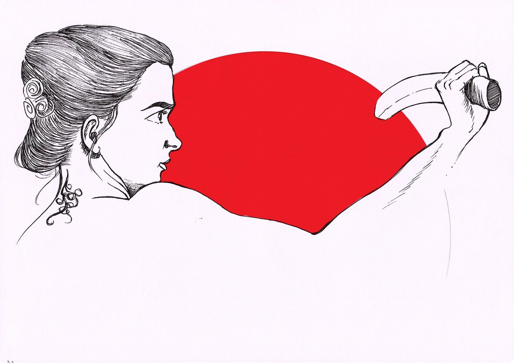

Self-Taught Artist
Deepak Vishwakarma — where imagination meets artistry.
I work across pencil sketches, ink, watercolor, and digital illustration for children's books. With a passion for storytelling and a knack for bringing characters to life, I invite you to explore my portfolio and embark on whimsical adventures through my artwork.

About
One stroke at a time.
Every piece here starts the same way — pencil or pen to paper, patient observation, and a willingness to redraw a line until it's right. That habit carries across everything I make, whether it's a fine-line ink portrait or a full spread for a children's book.
Join me in discovering the magic of creativity, one stroke at a time. — Deepak
Selected Work